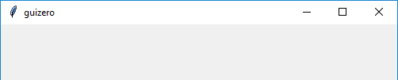

App
(Contains a tkinter.Tk object)
__init__(
self,
title="guizero",
width=500,
height=500,
layout="auto",
bgcolor=None,
bg=None,
visible=True)
What is it?
The App object is the basis of all GUIs created using guizero. It is the main window which contains all of the other widgets.

How do I make one?
Create an App object like this:
from guizero import App
app = App()
app.display()
Starting parameters
When you create an App object you can specify any of the following parameters, all of which are optional. Specify parameters in the brackets like this: app = App(bg="red", height=200)
| Parameter | Data type | Default | Compulsory | Description |
|---|---|---|---|---|
| bg | color | None | No | The background colour of the app window and widgets inside it. Takes a color value. |
| height | int | 500 | No | The height of the window in pixels. |
| layout | string | "auto" | No | Whether widgets pack themselves ("auto") or you specify their position on a grid ("grid") |
| title | string | "guizero" | No | The title displayed in the bar at the top of the window. |
| width | int | 500 | No | The width of the window in pixels. |
| visible | boolean | True | No | If the App should be visible. |
Methods
You can call the following methods on an App object.
| Method | Takes | Returns | Description |
|---|---|---|---|
| add_tk_widget(tk_widget, grid=None, align=None, visible=True, enabled=None, width=None, height=None) | tk_widget (tk), grid (list), align (str), visible (bool), enabled (bool), width (int), height (int) | Widget | Adds a tk widget into a guizero container. Note - this is an advanced feature see Using tk for more information. |
| after(time, command, args=None) | time (int), command (function name), args (list of arguments) | - | Schedules a single call to command after time milliseconds. (To repeatedly call the same command, use repeat()) |
| cancel(command) | command (function name) | - | Cancels a scheduled call to command |
| destroy() | - | - | Destroys the widget |
| disable() | - | - | Disables all the widgets in the app so that they cannot be interacted with |
| display() | - | - | Displays the app on the screen. You MUST call this method at the end of your program to display the app on the screen. |
| enable() | - | - | Enables all the widgets in the app |
| error(title, text) | title (str), text (str) | - | Displays a popup box with an error icon |
| exit_full_screen() | - | - | Exit full screen display |
| focus() | - | - | Gives focus to the widget |
| hide() | - | - | Hides the app window from view. |
| info(title, text) | title (str), text (str) | - | Displays a popup box with an information icon |
| question(title, text, initial_value=None) | title (str), text (str), initial_value (str) | Pressing Ok returns value entered into the box is returned and pressing Cancel returns None |
Displays a popup box with a question box which can accept a text response |
| repeat(time, command, args=None) | time (int), command (function name), args (list of arguments) | - | Repeats command every time milliseconds. This is useful for scheduling a function to be regularly called, for example updating a value read from a sensor. |
| select_file(title="Select file", folder=".", filetypes=[["All files", "."]], save=False) | title (str), folder (str), filetypes (list), save (bool) | Full path of the file selected as a string | Display a box to select a file to open or save. If Open or Save is pressed the filename path is returned. If Cancel is pressed None is returned. |
| select_folder(title="Select folder", folder=".") | title (str), folder (str) | Full path of the folder selected as a string | Display a box to select a folder. If a folder is selected the folder path is returned, otherwise None is returned. |
| set_full_screen(keybind) | String | - | Set the application to display full screen. Option to specify a key to exit full screen (default is 'Esc'.) |
| show() | - | - | Displays the app window if it was previously hidden |
| update() | - | - | Force the application to update itself, useful if changes aren't reflected in the UI. |
| warn(title, text) | title (str), text (str) | - | Displays a popup box with a warning icon |
| yesno(title, text) | title (str), text (str) | Pressing Yes returns True and pressing No returns False |
Displays a popup box with yes and no options |
| on_close(command) | command (function name) | - | Calls the given function when the user tries to close the window. |
Parameters in italics will still work but are deprecated - this means you should stop using them because they may not work in future versions of guizero
Properties
You can set and get the following properties:
| Method | Data type | Description |
|---|---|---|
| bg | color | The background colour of the window |
| children | list(widgets) | A list of widgets in this container |
| enabled | boolean | True if the app is enabled |
| height | int | The height of the window |
| font | string | The font that widgets should use |
| full_screen | boolean | False |
| layout | string | The layout being used by the App ("auto") or ("grid") |
| title | string | The title of the window |
| text_size | int | The size of the text widgets should use |
| text_color | color | The colour of the text widgets should use |
| visible | boolean | If the app is visible |
| width | int | The width of the window |
| when_closed | function | The function to call when the App is closed. Setting to None (the default) will reset. |
Refer to a property as <name of widget>.property. For example, if your App object is called app you would write app.title.
You can set the property (for example app.title = "Hello world") or get the value of the property to use (for example print(app.title)).
Examples
Creating an App object
Create an App object by calling the App() constructor. You should give the object a name so you can refer to it later - in this case we have called it app. It is best to keep the name you give to your App object quite short, as you will have to use it to tell other widgets where they should be stored.
At the end of the program you MUST tell the app object to begin the display loop.
from guizero import App
app = App(title="My app", height=300, width=200)
app.display()
Changing the title
You can change the title of the app object once it has been created like this:
from guizero import App
app = App(title="My app", height=300, width=200)
app.title = "A different title"
app.display()
This will display the app with the updated title: